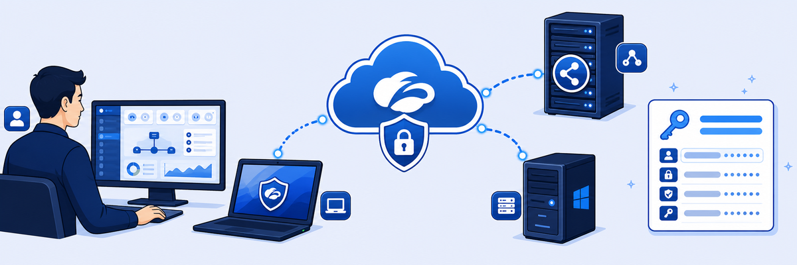

Scenario: Before touching any configuration, review the lab environment topology, understand the virtual machine roles, and locate the credential reference you will need throughout all 16 labs.

The EDU-202 lab uses a Skytap cloud environment with multiple VMs interconnected to simulate a real enterprise network — a corporate LAN, a remote network, and internet-facing segments.
- Why does the ZPA App Connector sit in the corporate network but requires no inbound firewall rules from the internet?
- The log streaming connector is separate from the ZPA connector. What would break if they were on the same VM?
- If the Corp: Client PC can only reach the internet through ZIA, what happens to HVAC browser-access traffic from a remote user who has no ZCC installed?
Lab Topology
The EDU-202 lab runs in Skytap and consists of two simulated networks:
- Corporate LAN — Corp: Client PC (Windows 10), Corp: Windows Server 2019, ZPA App Connector VM (Linux), Log Streaming Connector VM (Linux)
- Remote Network — Remote: Linux Client PC, Remote: DNS Server (Windows)
The corporate tenant domain is safemarch.com. Your assigned FQDN follows the pattern zsXXXX.safemarch.com. Enter it in the Lab Configuration panel above so all placeholders fill in automatically.
Virtual Machine Reference
| VM | OS | Role |
|---|---|---|
| Corp: Client PC | Windows 10 | Primary workstation for all lab tasks. ZCC pre-installed. |
| Corp: Windows Server | Windows Server 2019 | Corporate CA for certificate signing (Lab 3), DNS server. |
| Corp: ZPA App Connector | CentOS Linux | ZPA connector serving internal apps. Provisioned in Labs 3–4. |
| Corp: Log Streaming VM | CentOS Linux | ZPA NSS connector for log streaming to SIEM. |
| Remote: Linux Client PC | Ubuntu Linux | Used to test browser access without ZCC in Lab 3. |
| Remote: DNS Server | Windows Server | External DNS server for CNAME configuration in Lab 3. |
Credential Reference
| System | Username | Password |
|---|---|---|
| ZSCALER PORTAL | ||
| ZIdentity / all portals | student@<Student FQDN> | <Session Password> |
| VIRTUAL MACHINES | ||
| Corp: Client PC | student | Admin-123! |
| Corp: Windows Server | Administrator | Admin-123! |
| Remote: Linux Client | Admin | Admin-123! |
| Remote: DNS Server | administrator | Zscaler123! |
| ZPA Connector / Log Streaming | admin | zscaler |
| SIEM / SSH | ||
| SIEM Server (SSH) | zscaler@siem.patraining.safemarch.com | Zscaler123! |
| SDC (Labs 9, 11, 12) | ||
| Solutions Demo Center | ZIA_ADMIN_USER_ID from Resources panel | <Session Password> |
Note: Enter your Student FQDN and Session Password in the Lab Configuration panel at the top of every page. Values persist across all lab pages via localStorage.